A transducer plays a very important role in any instrumentation system.
Any device which is able to convert one form of energy into another form is called as a transducer. For example, even a speaker can be called as a transducer as it converts electrical signal to pressure waves (sound). But an electrical transducer will convert a physical quantity to an electrical one.
consists of Three basic elements:
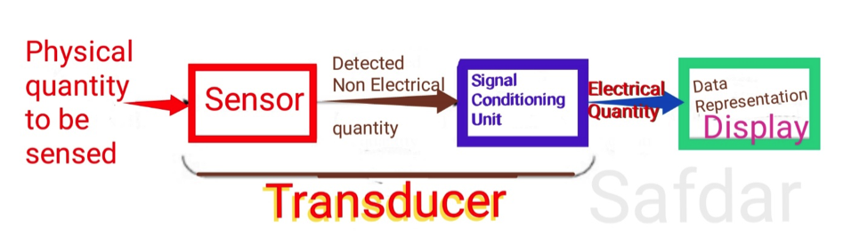
A Sensor is a device that is used to detect changes in any physical, analog quantity like temperature, pressure, flow, Speed, level etc.
Changes in the input quantity detected by a Sensor and reflected as changes in output quantity.
Both the input and output quantities of a Sensor are non-electrical in nature.
Since non-electrical output quantity of the Sensor is inconvenient for further processing, the Signal Conditioning Unit is used to convert the physical output to an electrical quantity.
Some of the Signal conditioning units are:
A Data representation device is used to present the measured output to the observer.
This can be A Scale, An LCD/ LED Display or A Signal Recorder.
Combination of Sensor and Signal Conditioning Unit is Known as a Transducer.
An electrical transducer is a device which converts physical quantities into a proportional electrical quantity such as voltage or Current which is equivalent to the measured quantity.
The input physical quantity can be pressure, level, temperature, displacement etc.
For example, a pressure transducer will convert pressure to an equivalent electrical potential. This output signal can be used to control the physical quantity automatically and/ or to display it.
The performance characteristics of a Transducer are key in selecting the best suitable transducer for a particular design.
Performance characteristics of transducers can be further classified into two types:
Static Characteristics
The static characteristics of a transducer is a set of performance criteria that are established through static calibration i.e. description of the quality of measurement by essentially maintaining the measured quantities as constant values of varying very slowly.
Following is a list of some of the important static characteristics of transducers.
Dynamic Characteristics
The dynamic characteristics of transducers relate to its performance when the measured quantity is a function of time.
The following are some dynamic characteristics that may be considered in selection of a transducer.
Overall, both static and dynamic characteristics of a Transducer determine its performance and indicate how effectively it can accept desired input signals and reject unwanted inputs.
Electromagnetic
Electromechanical
Electrochemical
Electroacoustic
Photoelectric
Thermoelectric
Radio acoustic
There are of many different types of transducers, they can be classified based on various criteria:
Types of Transducers based on Whether an External Power Source is required or not
Active Transducer
Active transducers are those which do not require any power source for their operation. They work on the energy conversion principle. They produce an electrical signal proportional to the input (physical quantity). For example, a thermocouple, Piezoelectric crystals are an active transducer.
Passive Transducers
Transducers which require an external power source for their operation is called as a passive transducer. They produce an output signal in the form of some variation in resistance, capacitance or any other electrical parameter, which than has to be converted to an equivalent current or voltage signal. For example, a photocell (LDR) is a passive transducer which will vary the resistance of the cell when light falls on it. This change in resistance is converted to proportional signal with the help of a bridge circuit. Hence a photocell can be used to measure the intensity of light.
Examples of Passive transducers are:
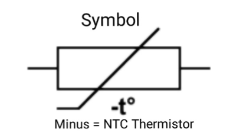
It is a TEMPERATURE TRANSDUCER. Coined from the words “THERmally controlled resISTOR”, thermistor is a temperature-controlled resistor. The resistance offered by this solid-state temperature-controlled device depends on the ambient temperature. All resistors do have a temperature dependency that is given by their temperature coefficients. For most of the resistors (fixed and variable), this temperature coefficient is kept very low, such that the change in temperature does not significantly affect their resistance. On the other hand, the temperature coefficient of thermistor is considerably high, thus their resistance change with respect to change in temperature.
Since in a thermistor, physical changes (change in its temperature) tend to change its electrical properties (like resistance), it can be also referred to as transducer.
A thermistor is mostly made from sensitive semiconductor-based metal oxides with metallised or sintered connecting leads onto a ceramic disc or bead.
Definition : “A thermistor (or thermal resistor) is defined as a type of resistor whose electrical resistance varies with changes in temperature. Although all resistors’ resistance will fluctuate slightly with temperature, a thermistor is particularly sensitive to temperature changes.”
Thermistors act as a passive component in a circuit. They are an accurate, cheap, and robust way to measure temperature. While they do not work well in extremely hot or cold temperatures, they are the sensor of choice for many different applications. They are ideal when a precise temperature reading is required.
The main two types of thermistors are NTC (Negative Temperature Coefficient) and PTC (Positive temperature coefficient).
How Does a Thermistor Work?
The working principle of a thermistor is that its resistance is dependent on its temperature. We can measure the resistance of a thermistor using an ohmmeter. If we know the exact relationship between how changes in the temperature will affect the resistance of the thermistor – then by measuring the thermistor’s resistance, we can derive its temperature.
How much the resistance changes depend on the type of material used in the thermistor. The relationship between a thermistor’s temperature and resistance is non-linear.
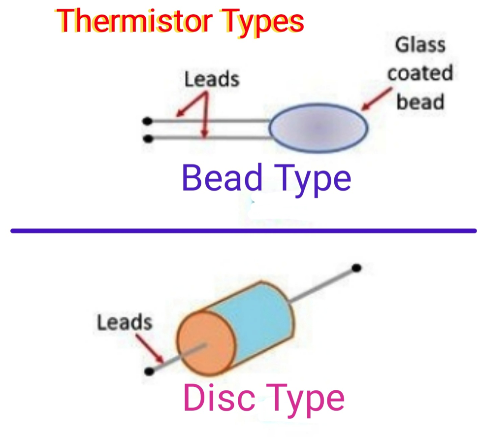
A typical thermistor graph is shown below:
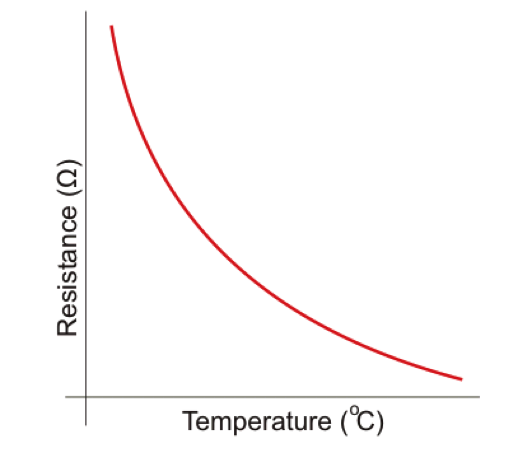
If we had a thermistor with the above temperature graph, we could simply line up the resistance measured by the ohmmeter with the temperature indicated on the graph. By drawing a horizontal line across from the resistance on the y-axis and drawing a vertical line down from where this horizontal line intersects with the graph, we can hence derive the temperature of the thermistor.
Advantages
Disadvantages
Applications
A pressure transducer, often called a pressure transmitter, is a transducer that converts pressure into an analog electrical signal.
A piezoelectric transducer/Sensor is a device that uses the piezoelectric effect to measure changes in acceleration, pressure, strain, temperature or force by converting this energy into an electrical charge.
This is an active type of transducers.
The piezoelectric material is a kind of transducers since it converts one form of energy to another. When on piezoelectric material any force or pressure is applied, the transducer converts this energy into voltage. This voltage is a function of the force or pressure applied to it.
The piezoelectric transducer has high sensitivity. So, it acts as a sensor and used in accelerometer due to its excellent frequency of response. The piezoelectric effect is used in many applications that involve the production and detection of sound, electronic frequency generation. It acts as an ignition source for cigarette lighter.
A piezoelectric transducer is based on the principle of the piezoelectric effect. The word piezoelectric is derived from the Greek word piezen, which means to squeeze or press. The piezoelectric effect states that when mechanical stress or forces are applied on quartz crystal, produce electrical charges on the quartz crystal surface.
The piezoelectric effect is discovered by Pierre and Jacques Curie. The rate of charge produced will be proportional to the rate of change of mechanical stress applied to it. Higher will be stress higher will be voltage.
Application of Piezoelectric Materials.
Examples of Piezoelectric Material are:
Piezoelectric Transducer Advantages
Piezoelectric Transducer Disadvantages
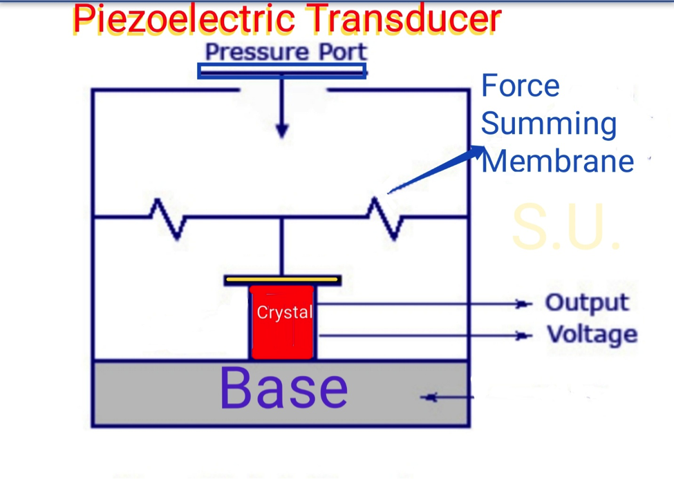
The term LVDT stands for the Linear Variable Differential Transformer. It is the most widely used inductive transducer that converts the linear motion into the electrical signal.
The output across secondary of this transformer is the differential thus it is called so. It is very accurate inductive transducer as compared to other inductive transducers.
Advantages of LVDT
Disadvantages of LVDT
It is concluded that they are advantageous as compared than any other inductive transducer.
Applications of LVDT
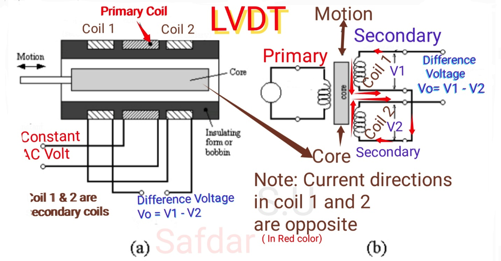
Working of an LVDT
The working of LVDT circuit diagram can be divided into three cases based on the position of the iron core in the insulated former.
Light transducers capture light intensity and convert it into an electrical signal. They use a light beam and convert it into a usable electric signal.
Light dependent resistors, LDRs or photo resistors can be used in circuits where it is necessary to detect the presence of light.
Besides light dependent resistor, LDR, they are known by photo resistor, photo cell or photoconductor.
LDRs are a particularly convenient electronics component to use. They provide large change in resistance for changes in light level.
In view of their low cost, ease of manufacture, and ease of use LDRs have been used in a variety of different applications. At one time LDRs were used in photographic light meters, and even now they are still used in a variety of applications where it is necessary to detect light levels.
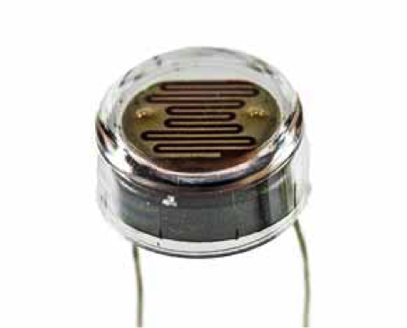
\LDR / photoresistor symbol
The LDR symbol used in circuits is based around the resistor circuit symbol, but shows the light, in the form of arrows shining on it. In this way it follows the same convention used for photodiode and phototransistor circuit symbols where arrows are used to show the light falling on these components.
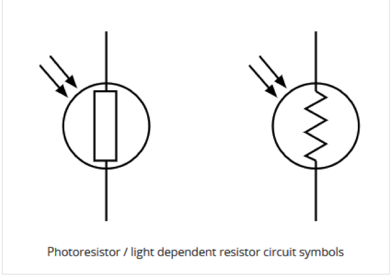
How an LDR works
It is easy to understand the basics of how an LDR works. Electrical current consists of the movement of electrons within a material.
Good conductors have a large number of free electrons that can drift in a given direction under the action of an external potential difference. Insulators with a high resistance have very few free electrons, and therefore it is hard to make the them move and hence a current to flow.
An LDR is made any semiconductor material with a high resistance. It has a high resistance because there are very few electrons that are free and able to move - the vast majority of the electrons are locked into the crystal lattice and unable to move. Therefore in this state there is a high LDR resistance.
As light falls on the semiconductor, the light photons are absorbed by the semiconductor lattice and some of their energy is transferred to the electrons. This gives some of them sufficient energy to break free from the crystal lattice so that they can then conduct electricity. This results in a lowering of the resistance of the semiconductor and hence the overall LDR resistance.
The process is progressive, and as more light shines on the LDR semiconductor, so more electrons are released to conduct electricity and the resistance falls further.
Applications of Photoresistors (LDRs)
An Optocoupler, is an electronic component that interconnects two separate , isolated electrical circuits by means of a light sensitive optical interface.
The basic design of an optocoupler, also known as an Opto-isolator, consists of an LED that produces infra-red light and a semiconductor photo-sensitive device that is used to detect the emitted infra-red beam. Both the LED and photo-sensitive device are enclosed in a light-tight body or package with metal legs for the electrical connections.
Types of Optocouplers
There are many different types of Opto couplers available, based on their needs and switching capabilities.
Optocoupler Applications
Optocouplers and opto-isolators can be used on their own, or to switch a range of other larger electronic devices such as transistors and triacs providing the required electrical isolation between a lower voltage control signal, for example one from an Arduino or micro-controller, and a much higher voltage or mains current output signal.
Common applications for opto-couplers include microprocessor input/output switching, DC and AC power control….
In this application, the optocoupler is used to detect the operation of the switch or another type of digital input signal. This is useful if the switch or signal being detected is within an electrically noisy environment. The output can be used to operate an external circuit, light or as an input to a PC or microprocessor.
Displacement transducers are devices intended to convert the motion of an object or machine into electromagnetic, magnetoelectric, or electrostatic signals. These signals are read and interpreted into data.
The capacitive transducer is used for measuring the displacement, pressure and other physical quantities. It is a passive transducer that means it requires external power for operation. The capacitive transducer works on the principle of variable capacitances.
Since Capacitance,
C= K [A ε0 / d], Where A is area, D is distance between plates , K is dielectric constant , ε0 – the permittivity of free space
The capacitance of the capacitive transducer changes because of overlapping of plates (Area) , change in distance between the plates and dielectric constant.
The capacitive transducer contains two parallel metal plates. These plates are separated by the dielectric medium which is either material, air, gas or liquid. In the normal capacitor the distance between the plates are fixed, but in capacitive transducer the distance between them are varied.
The capacitive transducer uses the electrical quantity of capacitance for converting the mechanical movement into an electrical signal. The input quantity causes the change of the capacitance which is directly measured by the capacitive transducer.
The capacitors measure both the static and dynamic changes. The displacement is also measured directly by connecting the measurable devices to the movable plate of the capacitor. It works on with both the contacting and non-contacting modes.
Principle of Operation
The equations below express the capacitance between the plates of a capacitor
C = KA ε0 / d
Where A – overlapping area of plates in m2
d – the distance between two plates in meter
ε0 – the permittivity of free space
K – dielectric constant
Advantage of Capacitive Transducer
Disadvantages of capacitive Transducer
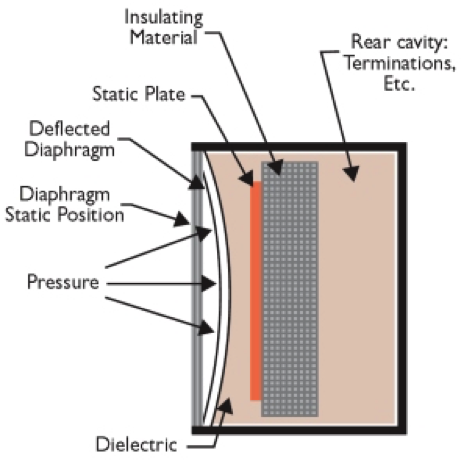
Uses of Capacitive Transducer
As the name implies, the condenser microphone or capacitor microphone uses a capacitance that varies in line with the incoming signal to generate the varying output voltage.
The name condenser microphone still persists. The microphone was invented in the days when capacitors were still called condensers.
Capacitor microphone operation
The condenser or capacitor microphone relies on changes in capacitance for its operation.
The actual condenser microphone element consists of a thin membrane in close proximity to a solid metal plate. The membrane acts as the diaphragm and is electrically conductive. Older microphones used a thin metal foil but more modern types may use a plastic coated with gold or aluminium. One common type is gold-sputtered mylar.
This construction creates a capacitor which may be in the region of 10 to 50pF. For the condenser microphone to operate it requires a DC voltage to be applied. This can be supplied by the battery shown, but for high end microphones it may also be supplied along the coaxial line to the microphone – this is known as phantom power. The most common voltage this is 48volts.
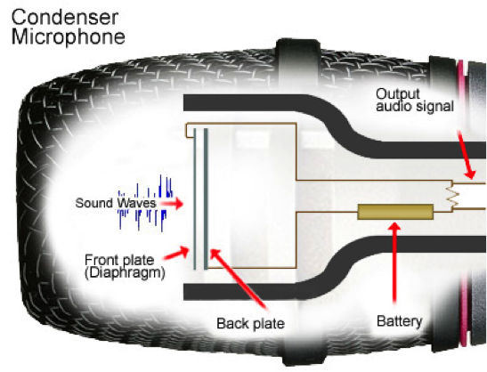
This voltage not only provides the voltage needed for the microphone to operate electrically but also pulls the diaphragm taut.
When sound waves hit the microphone, the diaphragm moves backwards and forwards. This changes the level of capacitance and as a result small voltage changes are seen across a high load resistor connected across the microphone element. .
As the impedance of the condenser microphone is very high, a buffer amplifier is needed. This has the effect of converting the signal so that it has a much lower impedance. This amplifier is also powered either from the internal battery or from the phantom power line.
Benefits or advantages of Condenser Microphone
It is smaller in size.
It has flat frequency response.
It is light in weight compare to dynamic microphone due to lighter diaphragm assembly.
It supports high range of frequencies due to fast moving diaphragm.
It offers high sensitivity and it is more suitable to capture sounds of audio instruments and vocals.
Drawbacks or disadvantages of Condenser Microphone
It requires voltage (i.e. power) to operate.
It can handle certain maximum input signal level.
It is more complex compare to dynamic microphone.
It is more affected due to extreme temperature and humidity conditions compare to dynamic microphone.
It is more expensive compare to dynamic microphone.
Cheaper condenser microphone generates small magnitude of noise.
A loudspeaker is an electroacoustic transducer.
Speakers work by converting electrical energy into mechanical energy (motion). The mechanical energy compresses air and converts the motion into sound energy or sound pressure level (SPL).
A loudspeaker consists of paper or plastic moulded into a cone shape called ‘diaphragm.’
When an audio signal is applied to the loudspeaker’s voice coil suspended in a circular gap between the poles of a permanent magnet, the coil moves rapidly back and forth due to Faraday’s law of induction. Magnetic field in voice coil (due to Oersted law) interact with permanent magnet's magnetic field. Like pole repels, and Unlike/different poles attract.
This causes the diaphragm attached to the coil to move back and forth, pushing on the air to create sound waves.
Voice coil, usually made of copper wire, is glued to the back of the diaphragm. When a sound signal passes through the voice coil, a magnetic field is produced around the coil causing the diaphragm to vibrate. The larger the magnet and voice coil, the greater the power and efficiency of the loudspeaker.
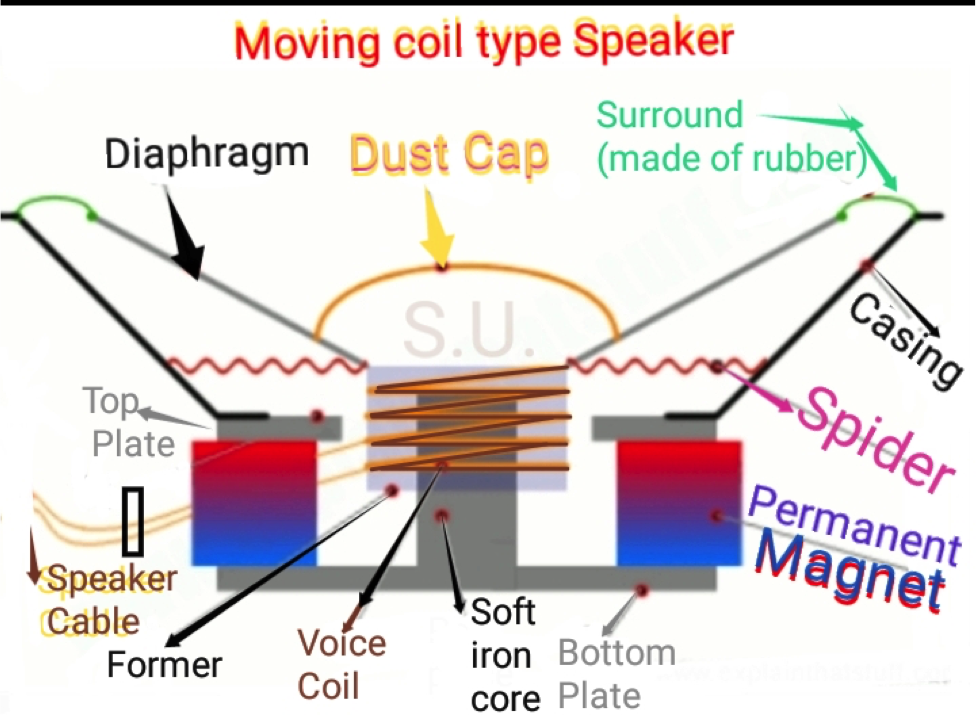
The coil is oriented co-axially inside the gap; the outside of the gap being one pole and the centre post (called as the pole piece) being the other.
The gap establishes a concentrated magnetic field between the two poles of the permanent magnet. The pole piece and backplate are often a single piece, called the pole plate or yoke.
As pulses of electricity pass through the electromagnet coil, its magnetic field direction rapidly changes, causing the cone to vibrate. The cone structure amplifies these vibrations, pumping sound waves into the surrounding air and towards your ears. That’s how sound comes from a loudspeaker.
A Typical human nose has 400 types of scent receptors enabling us to smell about 1 trillion different odors. But still many of us do not have the capacity to identify the type or concentration of gas present in our atmosphere. This is where Sensors comes in, there are many types of sensors to measure different parameters and a Gas sensor is one which comes handy in applications where we have to detect the variation in the concentration of toxic gases in order to maintain the system safe and avoid/caution any unexpected threats. There are various gas sensors to detect gases like oxygen, Carbon Dioxide, Nitrogen, methane, LPG etc. They can also be commonly found in devices that are used to detect the leakage of the harmful gases, monitor the air quality in industries and offices etc.
A gas sensor is a device which detects the presence or concentration of gases in the atmosphere. Based on the concentration of the gas the sensor produces a corresponding potential difference by changing the resistance of the material inside the sensor, which can be measured as output voltage. Based on this voltage value the type and concentration of the gas can be estimated.
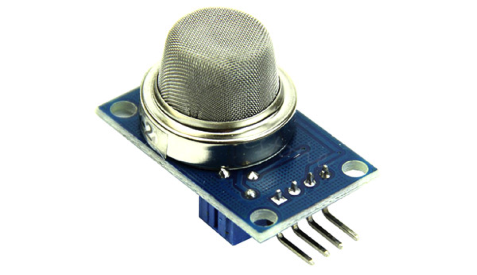
MQ-6 Gas Sensor for sensing LPG, butane
The type of gas the sensor could detect depends on the sensing material present inside the sensor. Normally these sensors are available as modules with comparators as shown above. These comparators can be set for a particular threshold value of gas concentration. When the concentration of the gas exceeds this threshold the digital pin goes high. The analog pin can be used to measure the concentration of the gas.